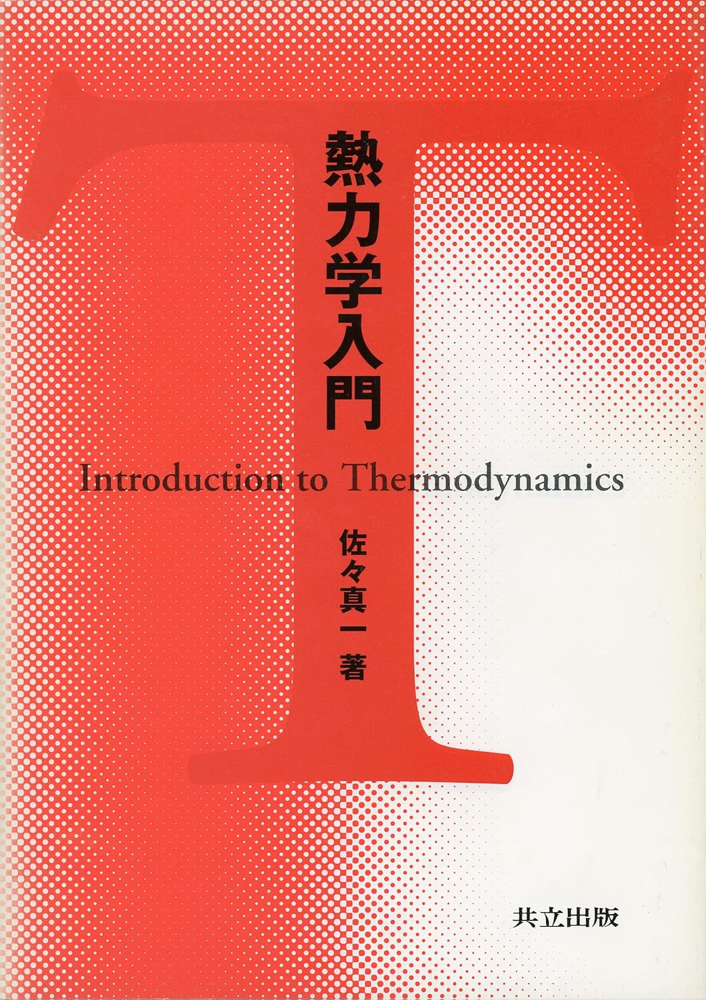

熱力学
熱力学のおすすめ参考書です。物理学科の人は最低でも上から３冊の本は全て読むこと。
熱力学=現代的な視点から 田崎晴明著
物理学科で熱力学を勉強したい人は必ず読むべき一冊。この本が出る前と出た後では、物理界隈の人たちがもつ「熱力学」へのイメージが確実に大きく変わったはず。熱力学がいかに数学的に完成された学問かを実感でき、そして著者のもつ物理への深い理解・洞察が読者の心をグっと掴む。たくみが100回は読み返した本。
熱力学の基礎 清水明著
物理の本にしては珍しく公理的に書かれた本で、熱力学の曖昧な部分の多くがこの一冊で解決する。著者の物理への洞察が(恐ろしいほど)鋭く、物理に対するものの考え方なども身につく最高の名著。個人的には何度も見返して何度も感動した。

熱力学入門 佐々真一著
難しい部分を後回しにし、熱力学の本質を浮き彫りにしてくれる一冊。後回しにした部分も最後まで読めばしっかりと回収してくれるので安心。ちなみに、著者の佐々さんは実際に講義をするとこの世のものとは思えないスピードで喋るので、活字になっているこの教科書はこの上なくありがたい。
熱力学・統計力学 熱をめぐる諸相 高橋和孝著
熱力学と統計力学を同じ著者から学べるだけでも幸せなのに、なんと一冊の本にまとまってしまった神本。内容は現代的かつ非常に読みやすい。演習問題が豊富なので、独学や院試対策にも最適。あと10年早く出てほしかった。
化学熱力学入門 由井広治著
個人的に、熱力学を定性的に理解する際、化学熱力学は非常に良い題材だと思っている。その際におススメしたい本の一つがこれだ。特徴はなんといっても挿入されているイラストの数。特に「自由エネルギー」関連の理解に一際役立つであろう。
しっかり学ぶ 化学熱力学 石原顕光著
化学熱力学もしっかりと学びたい！と切に願う物理学徒に強くおすすめしたい一冊。決して簡単ではないが、「これが知りたかった！」という箇所が(個人的に)詰まっている感動の書。しっかりと涙が出た。